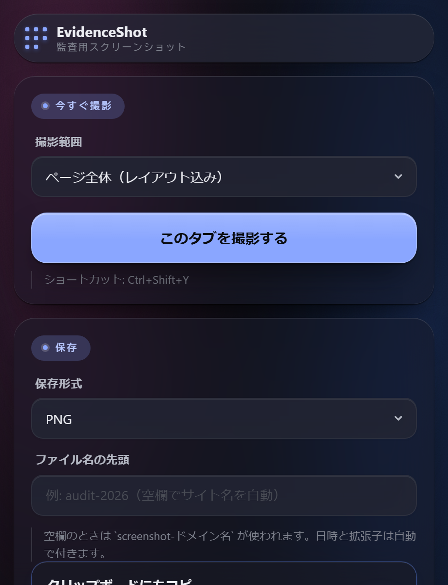

広域権限を持たない
常時の全サイト権限は使わず、現在のタブに対して撮影を実行します。
Evidence screenshotChrome / MV3
表示領域・ページ全体・本文中央。スクロール連結もタイムスタンプ付与も、ポップアップかショートカットキーひとつで完了します。

CAPTURE SPEC
EvidenceShot の撮影仕様
無限スクロール型のページでも終端がぶれないよう、撮影中に増えた分は含めない安全側の設計です。
拡張機能アイコンを押すか、割り当てたショートカットキーで撮影を始めます。
ポップアップで範囲・形式・焼き込みの設定を確認します。ブラウザテーマに合わせて自動で明暗が切り替わります。
撮影後にクリップボードへコピーされるので、Excel や報告書へすぐ貼れます。
FEATURES
撮った時刻、固定の注記、操作していたカーソル位置。あとから見返したときに状況が分かる情報を、画像そのものに残します。
対象と処理の一覧
| 項目 | 内容 | 状態 |
|---|---|---|
| 撮影範囲 | 開始時点の末尾まで | FIXED |
| タイムスタンプ | 右上に焼き込み | ON |
| 固定テキスト | 左下に焼き込み | ON |
| クリップボード | コピー済み | READY |
SCROLL SAFETY
range = スクロール範囲（撮影開始時点）
no drift
撮影中にあとから増えた分は含めず、終端をぶらさない
DESIGN PRINCIPLES
常時の全サイト権限は使わず、現在のタブに対して撮影を実行します。
無限スクロールのページでも、撮影開始時点の範囲で確定させます。
保存とクリップボードコピーを同時に済ませ、次の作業へすぐ移れます。
INSTALL
Chrome / Edge / Brave などの Chromium 系ブラウザに対応。日本語・英語の 2 言語対応。MIT License。